link://nan.bna.org.nau · Central bank of the North American Union · issuer of the Continental
Governor
Elena M. Hartley
The Continental
The Continental (Ȼ · CTL) is the common currency of the North American Union. Its banknotes are standard across every member state; its coins are struck by each member's own mint — a single Union face on one side, a national design on the other. The notes and coins below are the Series 2026 issue now in circulation.
Banknotes
Five denominations, issued by the Bank of North America and identical Union-wide. Each note carries a theme on the front and a member state's landscape on the back.
Front
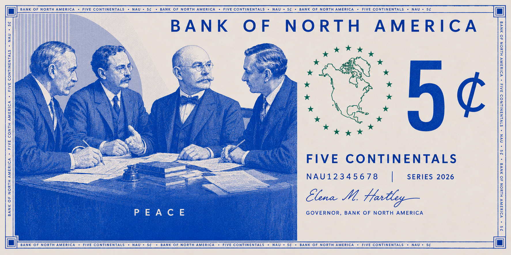
Back
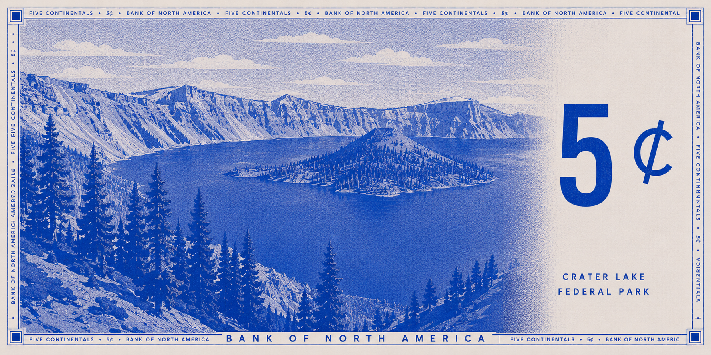
Ȼ5Peace
The founding leaders of the Union's predecessor, established in the 1920s.
Reverse · Crater Lake Federal Park, United States
Series 2026 · Gov. Elena M. Hartley
Front
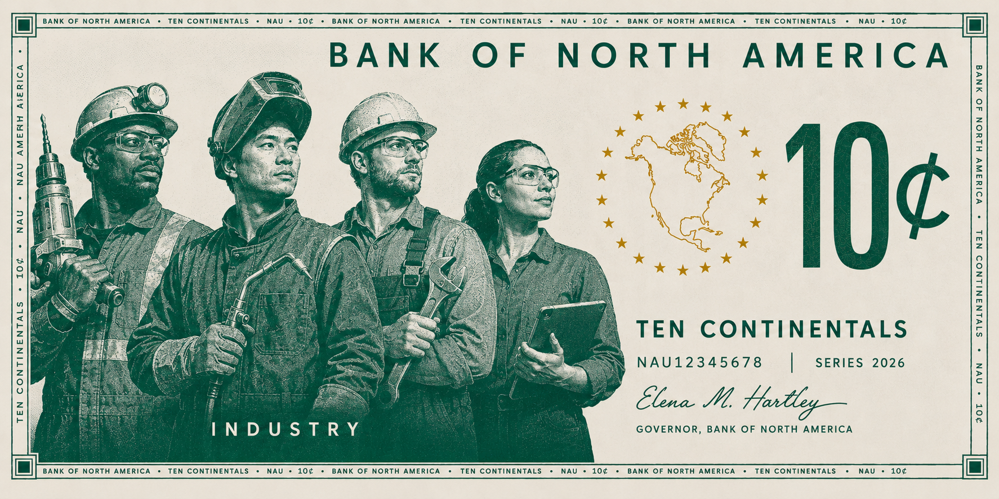
Back
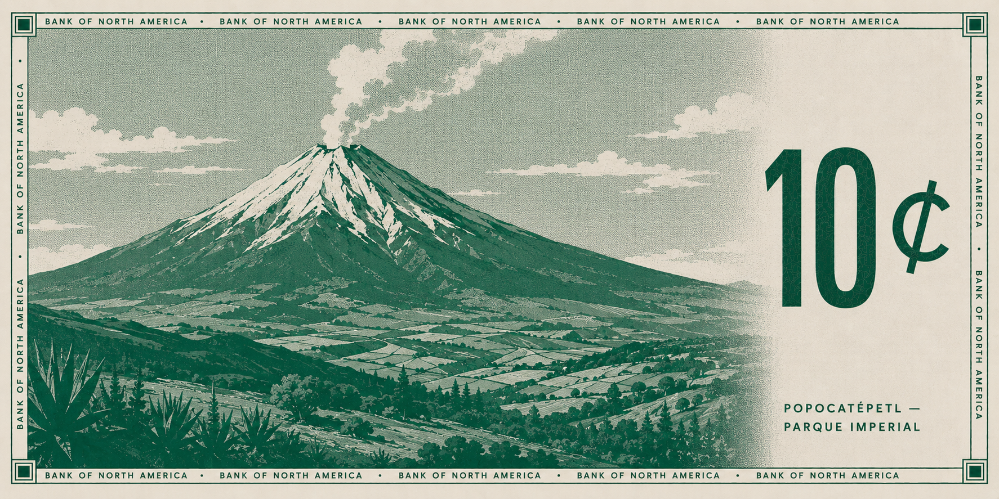
Ȼ10Industry
Workers drawn from across the modern trades of the Union.
Reverse · Popocatépetl, Parque Imperial, Mexico
Series 2026 · Gov. Elena M. Hartley
Front
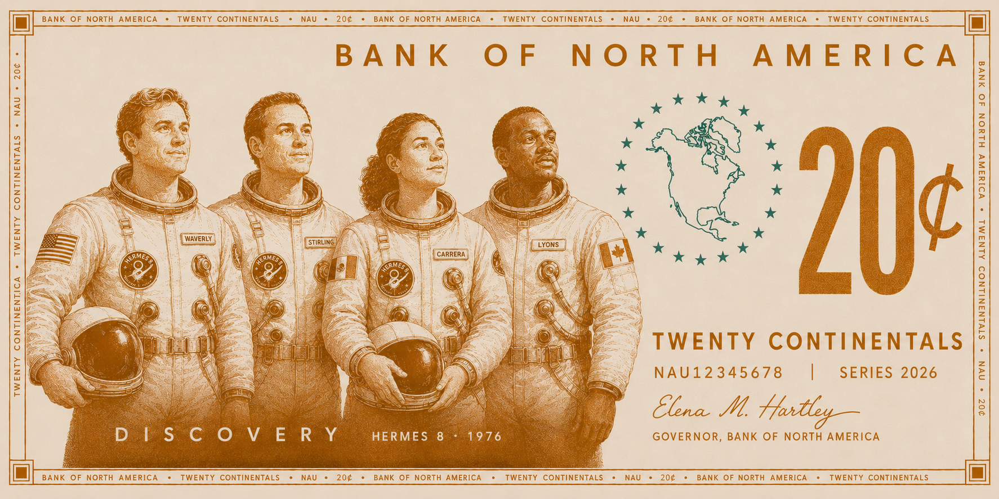
Back
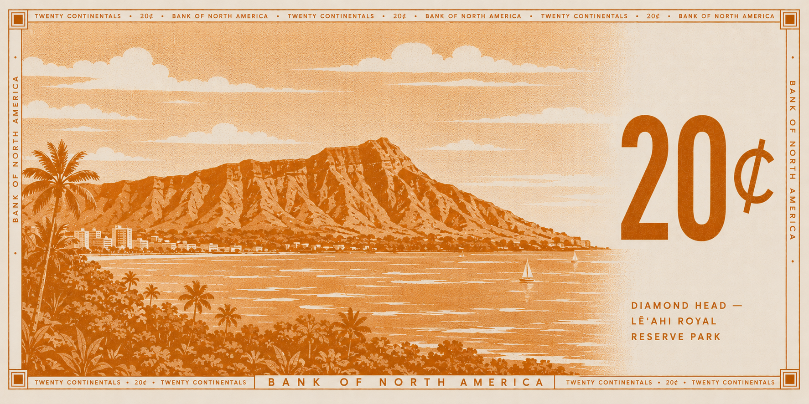
Ȼ20Discovery
The crew of Hermes 8, the 1976 Moon landing — Waverly, Stirling, Carrera and Lyons.
Reverse · Diamond Head, Leʻahi Royal Reserve Park, Kingdom of Hawaii
Series 2026 · Gov. Elena M. Hartley
Front
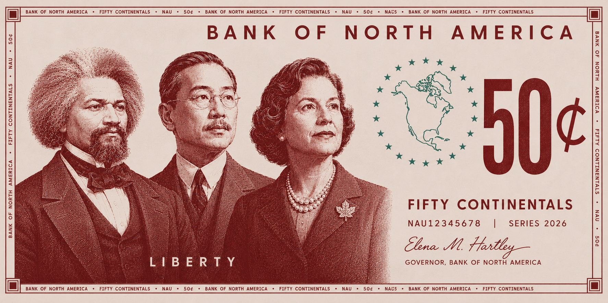
Back
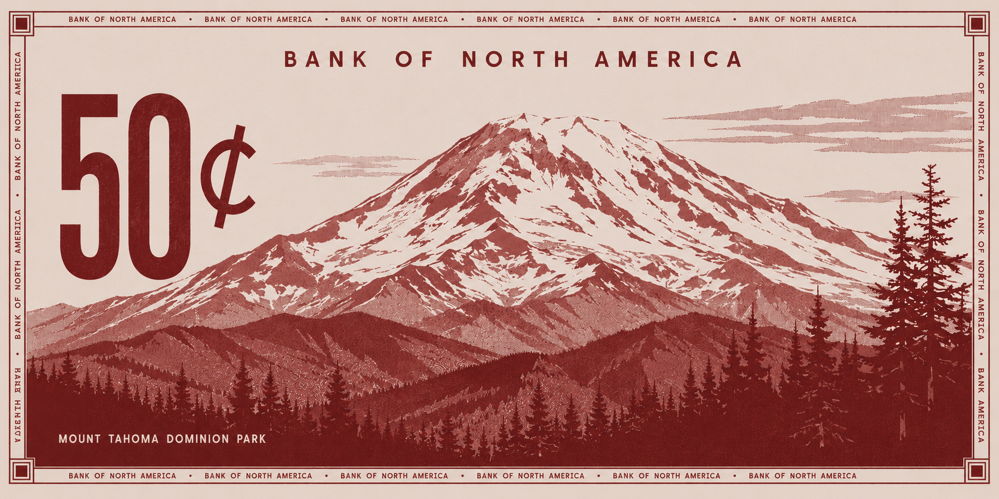
Ȼ50Liberty
Three firsts of the Union: VP Frederick Bailey, first Black Vice President of the United States; Councilor Chen Yong-fa, first Chinese-Californian elected to office (San Francisco, 1897); and PM Margaret Dunbar, Canada's first woman Prime Minister.
Reverse · Mount Tahoma Dominion Park, Canada
Series 2026 · Gov. Elena M. Hartley
Front
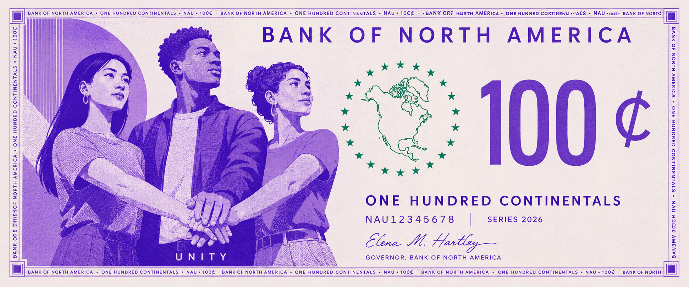
Back
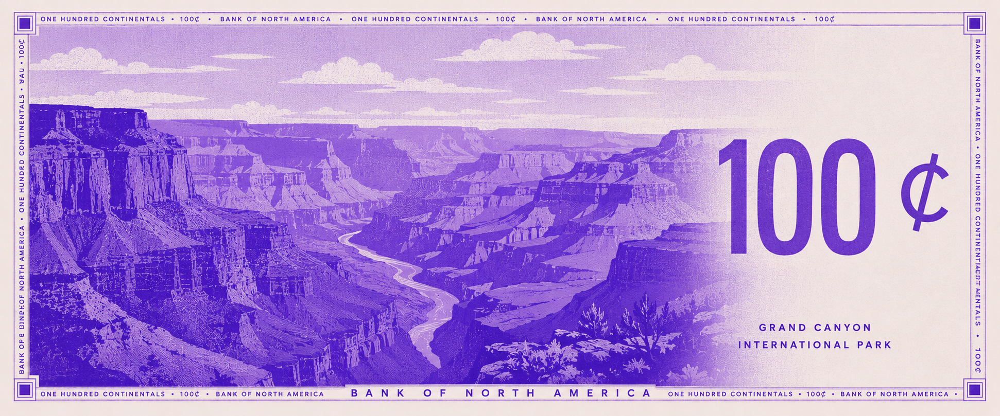
Ȼ100Unity
Three young North Americans joining hands — a portrait of the Union's shared future.
Reverse · Grand Canyon International Park, on the Texas–California border
Series 2026 · Gov. Elena M. Hartley
Coins
Every Union coin shares a common face — the denomination, the star-ringed continent, and the motto Foedus Aequorum — while its reverse is designed and struck by the minting member state. The coins below are struck by the United States Mint. The bimetallic Ȼ1 and Ȼ2 are the Union's highest-value coins.
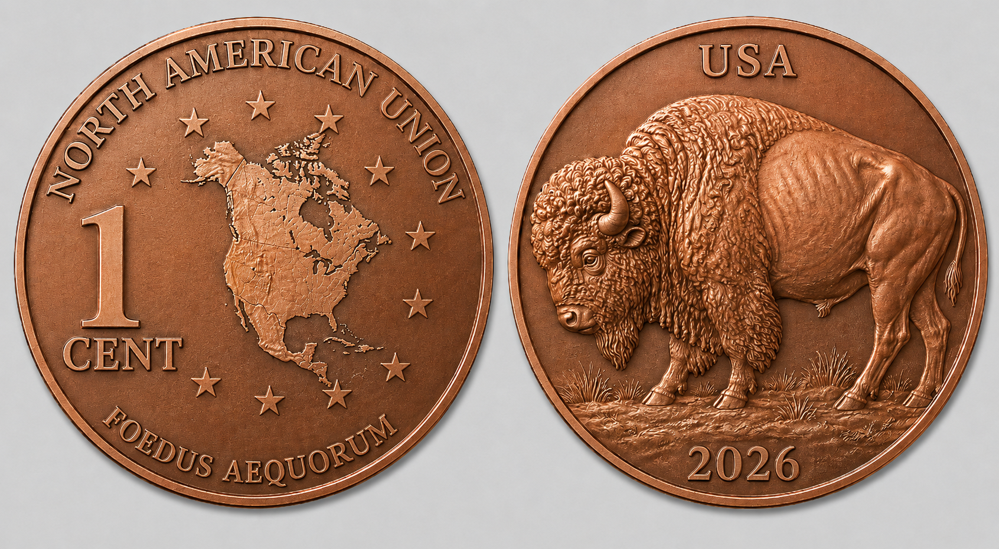
1¢
Reverse: buffalo.
United States Mint
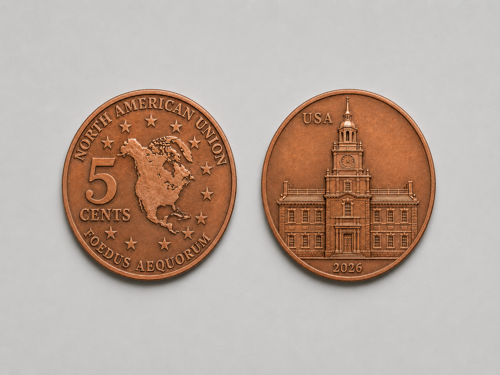
5¢
Reverse: Independence Hall.
United States Mint
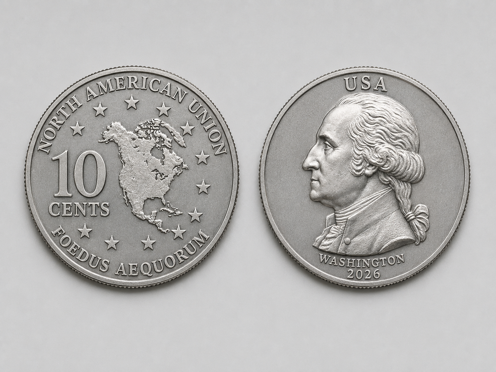
10¢
Reverse: George Washington.
United States Mint
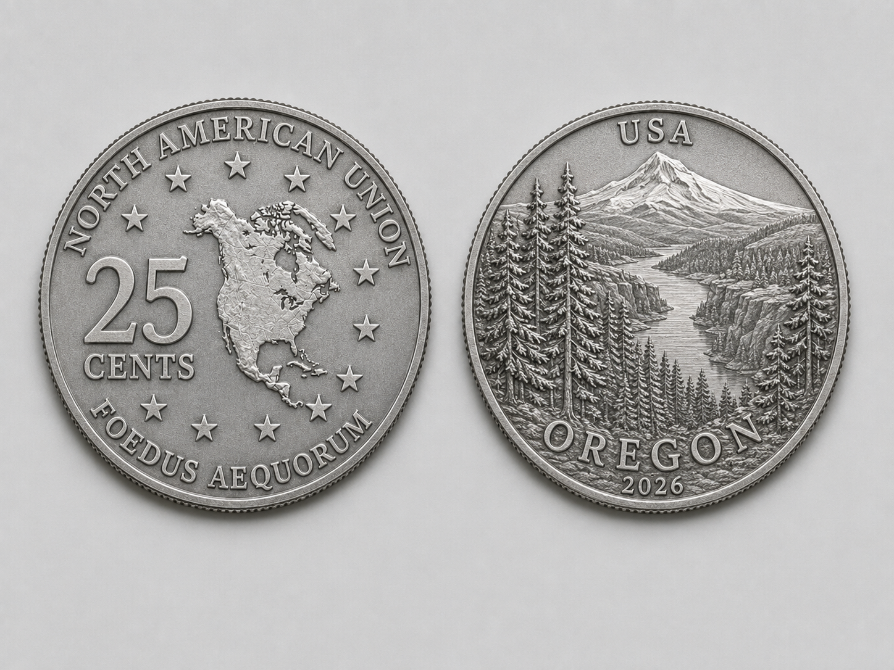
25¢
Reverse: a rotating themed series since the early 2000s. The current series honors the US states — shown here, Oregon.
United States Mint
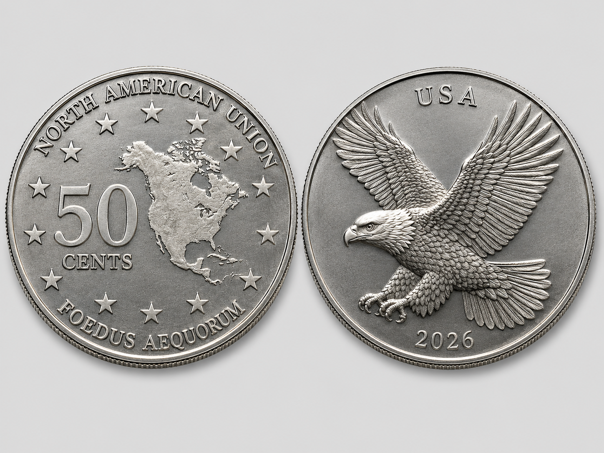
50¢
Reverse: a naturalistic eagle.
United States Mint
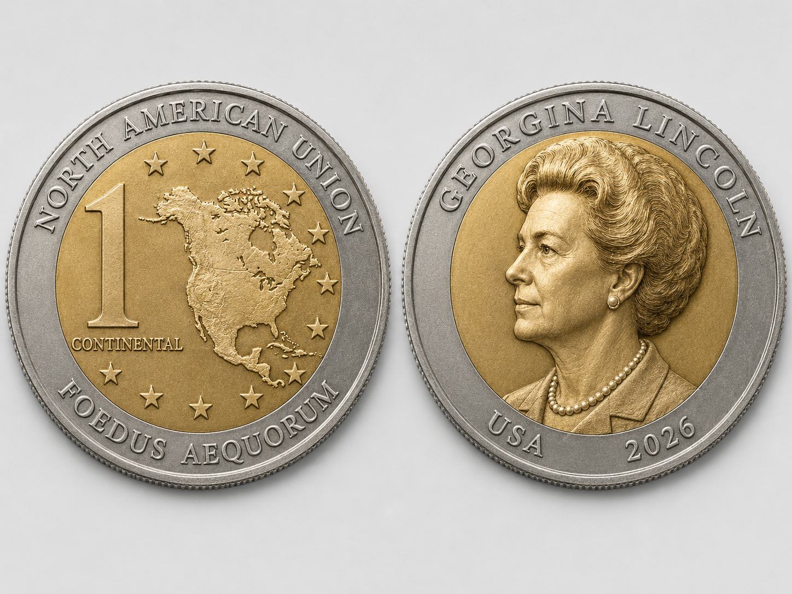
Ȼ1
Bimetallic — silver ring, gold center. Reverse: Georgina Lincoln, first female President of the United States.
Bimetallic · US Mint
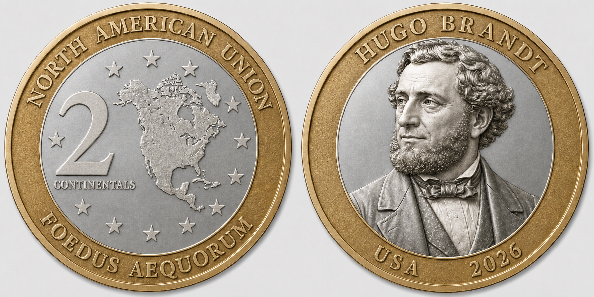
Ȼ2
Bimetallic — gold ring, silver center. Reverse: Hugo Brandt, Free States leader in the War Between the States, later President and architect of Reconstruction — the "Savior of the Union."
Bimetallic · US Mint
Foedus Aequorum
"A covenant of equals" — the motto borne on every Union coin.
Series 2026 Issued by the Bank of North America Gov. Elena M. Hartley